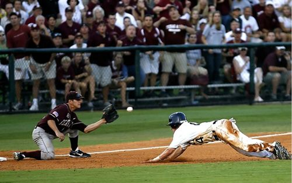

Hello my name is Maribel I am from Mexico but I live in San Francisco. My favorite hobby is baseball.When I was little i lived in front of a park where people played baseball every Sunday so i used to go with my mom to watch it every weekend, thats how I stared to like it. I played baseball for a couple years when I was in high school but, I had to move so I left the team.
Playing baseball is really easy.You will need three things;
A team may have alot of players but a minimum of nine people to complete the field. One player at a time will hit the ball with the bat and sent it as far as he can, the opposite team will try to catch the ball, if they do it is call an out. they keep playing until complete three outs, then its the other team turn. There are a tollal of 9 innings, if the game is tie it may be extended until one of the teams score.
by Mandie Inman
by Pixabay
by Pixabay
One very important tip is to make sure to choose the right batting gloves,and bat size.Having the right mindset. This means to have confidence in yourself that you are going to hit the ball.Comunicate with your team making sure that everyone is in the same page and commited to play as a team. Visit baseball training world for more tips on how to improve your skills.